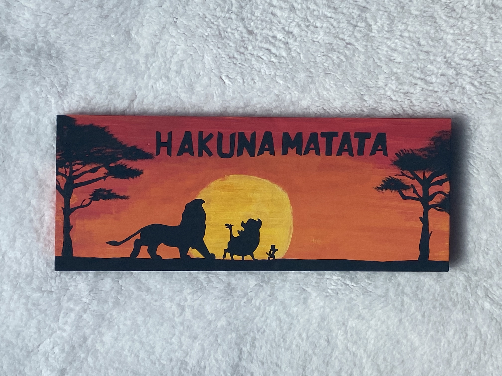

Elementary Mural

Continuing my tradition from the previous summer, I painted another mural in my elementary school. This mural is a reminder to students that school is a safe environment to follow their dreams in.
Kingergarten Mural
In a two week project, I painted a mural in the kindergarten area of my school. My friends and I persevered through the sun, rain, and humidity to create a masterpiece on two walls and six doors. I am beyond happy with the end result!
Lessons with Mickey
Recently I went to a woman's club to guide attendees through my painting of Mickey and Minnie. We sketched, painted, and bonded together. I was able to share my passion for art and Disney with a wonderful group of welcoming women.
The Disney Door
This two-week endeavor involved upcycling a plain-white door to a collage of Disney paintings. Every art piece required minuscule details and vibrant colors to bring infamous characters to life. Enjoy!
Stitch
I painted the beloved Stitch with his frog friend in front of Hawaii's beautiful landscapes. This is one of my best art pieces. The detail put into Stitch and the frog is immaculate.
Mickey Topiary
After receiving a red plant pot, I was inspired to create a Mickey topiary. The end product clearly resembles Mickey and would be the perfect addition to Epcot's flower festival.
Pooh and Friends
Winnie the Pooh, Tigger, Eeyore, Piglet, and Roo are painted enjoying a beautiful day and each other's company. Winnie the Pooh is a timeless tale that deserves recognition for teaching people of all ages the importance of friendship.
The Lion King
In this painting, I depicted the silhouette of Simba, Pumba, and Timon in front of a sunrise in the Pride Lands of Africa.
Miguel and friends
Ever since its release, I fell in love with Coco. The characters, landscapes, music, and culture made it one of my favorite movies. Miguel, Dante, and Hector stand surrounded by marigold petals.
Lady and the Tramp
Lady and the Tramp enjoy spaghetti in front of a starry night sky. While the spaghetti is a bit cartoonish, it shows the development of my art skills. I evolved from questionable spaghetti to murals of gorgeous Disney characters.
Mickey and Minnie
As an anniversary gift, I painted the two lovebirds of Disney, Mickey and Minnie. Minnie sports her iconic red polka-dotted bow and dress while Mickey matched her in red shorts.
"Mine!" Seagulls
The "Mine!" birds of Finding Nemo will always hold a special place in my heart. Painting each individual bird was a tedious task, but the end result was well worth it.
Remy's Kitchen
With the arrival of Ratatoullie to the France pavillion in Epcot, I found it necessary to give Remy a space in my room. Quoting Gusteau, Remy stands surrounded by vegetables.
It's a Small World
Originally created for the 1964 New York World Fair, the small world ride now makes an appearance in various Disney theme parks. I wanted to give it a place in my room too.
A long time ago in a galaxy far, far away

To commemorate the iconic Star Wars saga, I painted a blue lightsaber with the phrase "May the force be with you" under it.
Lost Boys Hideout Sign
In an ode to the 1953 animated film, Peter Pan, I created a sign detailing the "rules" of Pan's Lost Boys. To top it off, Peter's green hat lies on the top right corner of the sign.
Flynn Rider WANTED Poster
After soaking a cardstock paper in coffee for several hours and burning the paper's edges, I was able to bring the Flynn Rider WANTED Poster to life.